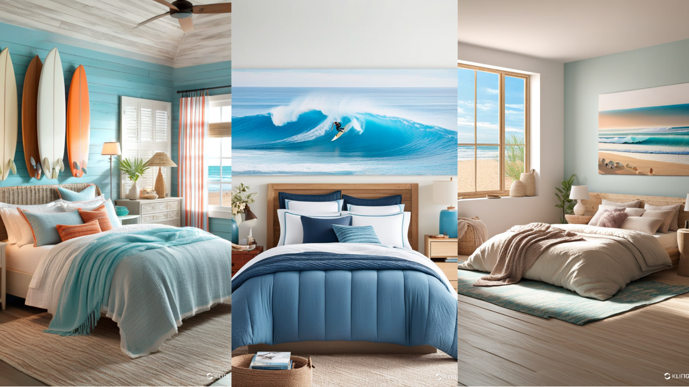
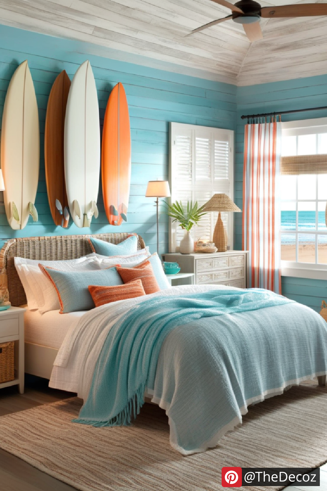
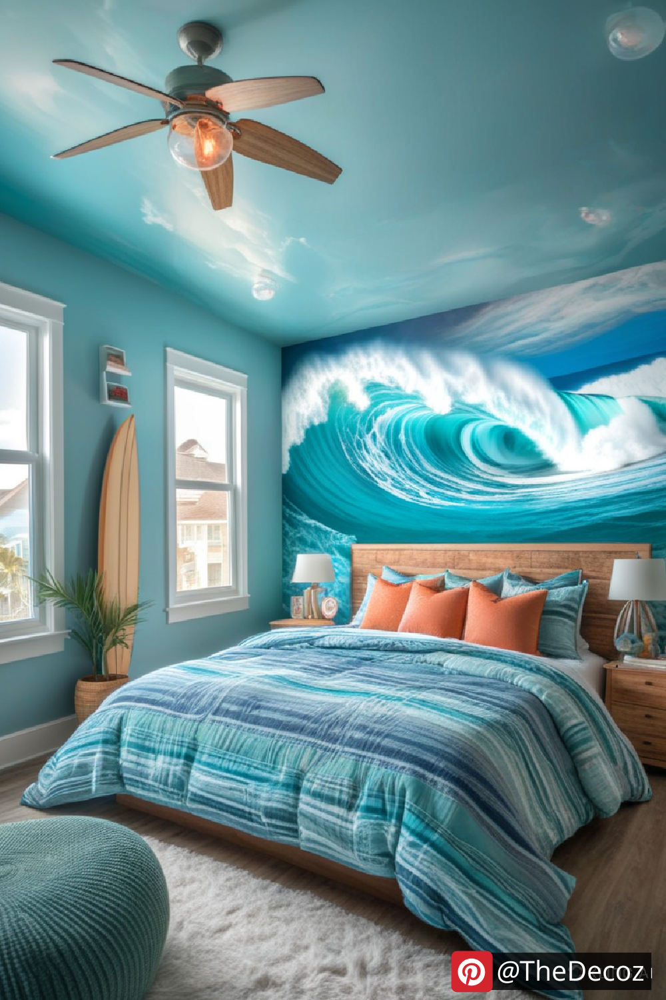
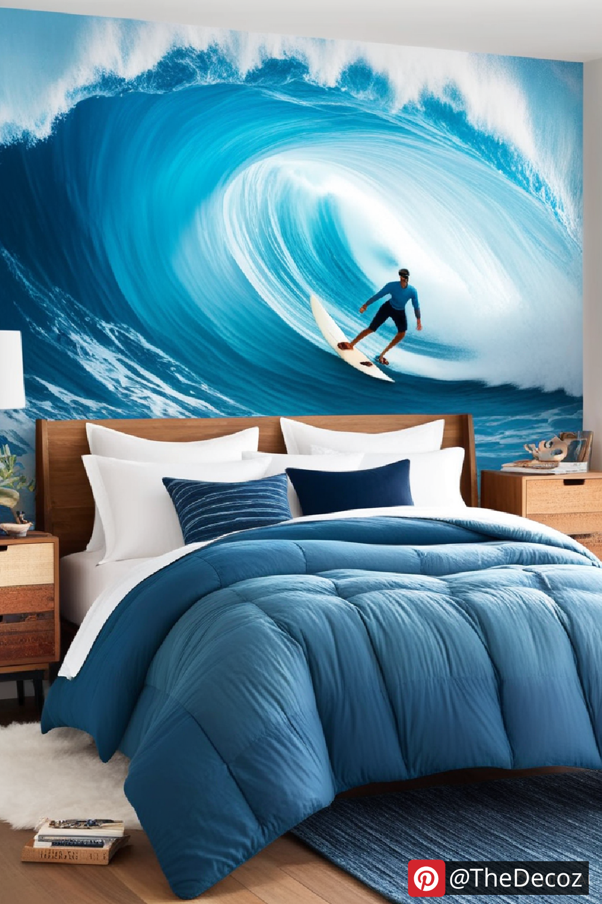
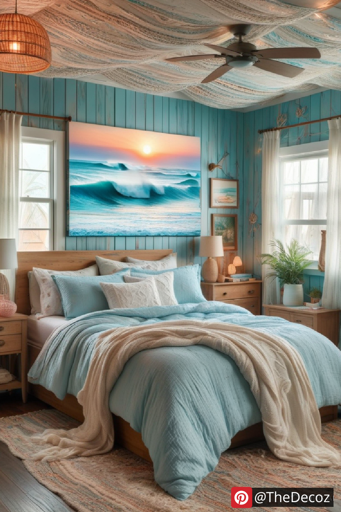

Transform Your Space with Stylish Surf Room Decor
If you’re passionate about the ocean and the thrill of riding waves, bringing that energy into your home with surf room decor is a fantastic way to keep the beach vibes alive year-round. Whether you're designing a bedroom, living room, or even a workspace, surf-inspired decor can create a relaxed, coastal atmosphere that reflects your love for the sea.
Key Elements of Surf Room Decor
1. Coastal Color Palette
The foundation of any surf-themed space is a soothing color scheme inspired by the ocean. Think shades of blue, turquoise, sandy beige, and crisp white. These colors evoke the feeling of being at the beach and create a breezy, open atmosphere.
2. Surfboards as Decor
A quintessential surf room wouldn’t be complete without a surfboard display. Whether mounted on the wall as an art piece, leaned against a corner, or repurposed as a functional item like a bench or coffee table, surfboards add an authentic touch to the decor.
3. Beach-Inspired Wall Art
Incorporate framed beach photography, wave paintings, or vintage surf posters to enhance the theme. Large wall murals depicting ocean waves can make a bold statement, instantly transforming the space into a coastal retreat.
4. Nautical and Natural Textures
Use natural materials like rattan, bamboo, reclaimed wood, and woven fabrics to enhance the organic feel of a surf-inspired space. Rope details, jute rugs, and linen curtains all contribute to a laid-back coastal ambiance.
5. Surf-Themed Accessories
Small decor elements can tie the entire theme together. Incorporate seashells, driftwood sculptures, surf-themed pillows, and ocean-inspired candles to bring warmth and personality to the room.
6. Lighting that Mimics the Coast
Choose lighting fixtures that complement the beach aesthetic, such as lantern-style pendants, rope-wrapped lamps, or even salt rock lamps to create a soft, ambient glow reminiscent of sunset on the shore.
Surf Room Decor Ideas for Different Spaces
Surf-Themed Bedroom
For a dreamy surf-inspired bedroom, opt for a bed with white or blue linen, a surfboard headboard, and wave-patterned cushions. Add string lights and driftwood accents to complete the cozy coastal look.
Surf Living Room
A surf-inspired living room can feature a mix of neutral and blue tones, plush seating, and surf-themed artwork. Incorporate woven baskets for storage and a coffee table made from reclaimed wood for an eco-friendly touch.
Surf-Inspired Workspace
If you want to bring the beach vibe into your workspace, consider adding a surfboard shelf, oceanic wall prints, and a cozy rattan chair. Keeping the decor light and airy will help foster a relaxed and creative environment.
Final Thoughts
Surf room decor is more than just a design trend—it’s a lifestyle choice that brings the joy of the ocean into your home. By carefully selecting colors, textures, and surf-inspired elements, you can create a space that reflects your passion for the waves while maintaining a stylish and inviting ambiance. So, whether you’re a dedicated surfer or simply love the beach, these decor ideas will help you craft a coastal paradise right in your own home.
   